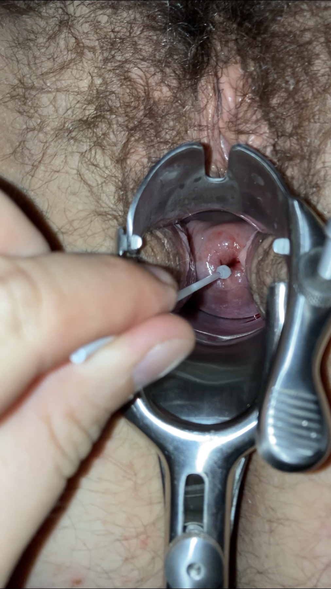

Página 2 · Parte A · Mobília
De baixo para cima: vagina, colo, istmo, corpo, fundo
- a ordem frontal do canal vaginal ao fundo;
- onde se colhe a colpocitologia;
- o que é istmo entre colo e corpo;
- o mapa mínimo com tubas e ovários.
O mapa mínimo de baixo para cima
No cerne ginecológico da pelve, o sistema genital feminino se organiza em secção frontal para nomeação. De baixo para cima, a primeira estrutura é a vagina / canal vaginal. Acima dela, entre útero e vagina, está o colo uterino.
Colo: o endereço do rastreamento
No colo uterino se realiza a coleta da colpocitologia oncótica — método de rastreamento do câncer do colo do útero. Colhe-se material da ectocérvice e da endocérvice.
Endereço fixo de prova: “colo” = sítio do rastreamento citológico (ecto + endo). Se a questão pergunta onde se faz o Papanicolaou, a resposta não é “útero” genérico — é o colo, com as duas faces da coleta.
Istmo, corpo, fundo e camadas
Logo acima do colo, entre colo e corpo, está o istmo — porção mais estreita do útero. Acima do istmo, o corpo uterino. No corpo distinguem-se miométrio (camada muscular) e endométrio (camada interna), delimitando a cavidade uterina. No extremo superior, a porção fúndica / fundo uterino.
Sequência axial a decorar: colo → istmo → corpo (e o fundo como teto do corpo).
Anexos: tubas e ovários
Anexos ao útero: tubas uterinas (trompas) em suas porções, e ovários. Em visão frontal, o mapa mínimo do genital interno é:

Procedimento real de rastreamento: escova cervical no orifício externo do colo.
By Mre80, via Wikimedia Commons, licenciado sob CC BY-SA 4.0. Fonte: https://commons.wikimedia.org/wiki/File:Taking_pap-smear_1.png
Quiz — fixação
A colpocitologia oncótica coleta material de:
- Gabarito B. Rastreamento do colo exige as duas faces (ecto+endo).
- (A) confunde cavidade com colo — endométrio fúndico não é sítio do Papanicolaou.
- (C) leva para tuba/ectópica — sítio errado de rastreamento.
- (D) miométrio é parede muscular, não sítio citológico de rastreamento do colo.
- Por que cair em A: “citologia = dentro do útero” é confusão endométrio×colo.
A porção mais estreita entre colo e corpo é:
- Gabarito C. Istmo = estreito axial do útero, entre colo e corpo.
- (A) fundo é o teto do corpo, não o estreito.
- (B) ampola é porção da tuba, não da sequência colo-corpo.
- (D) infundíbulo pélvico é ligamento suspensor do ovário, fora do eixo colo-corpo.
- Por que cair em B: “ampola” soa como estreito pelo nome, mas é topografia de anexo.